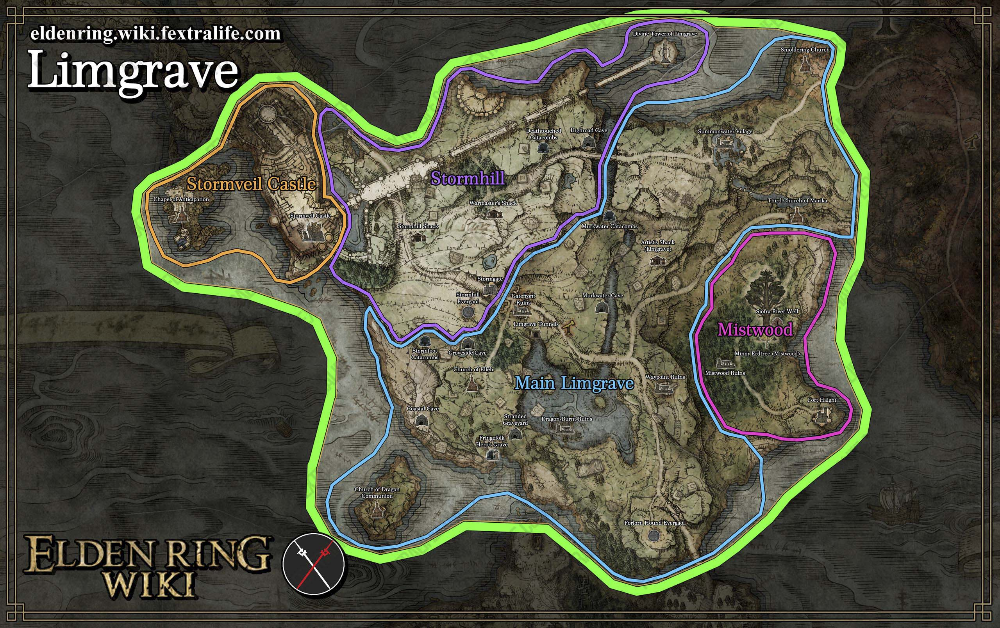
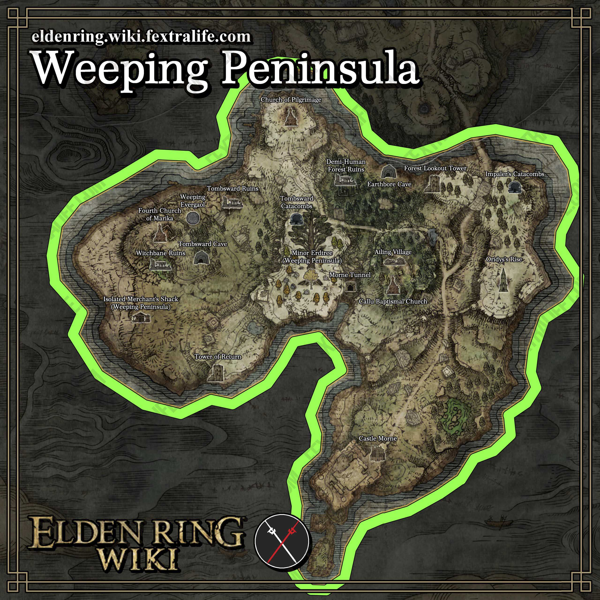
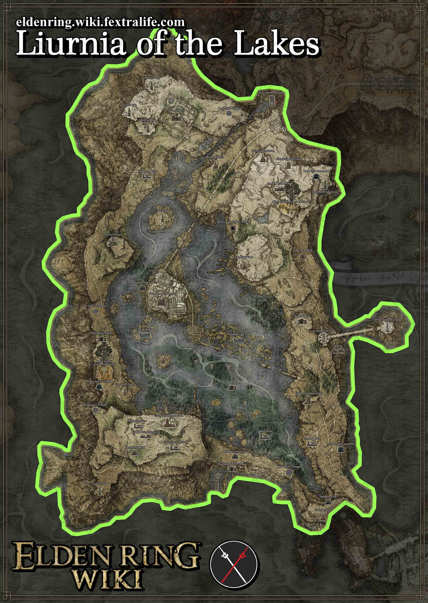
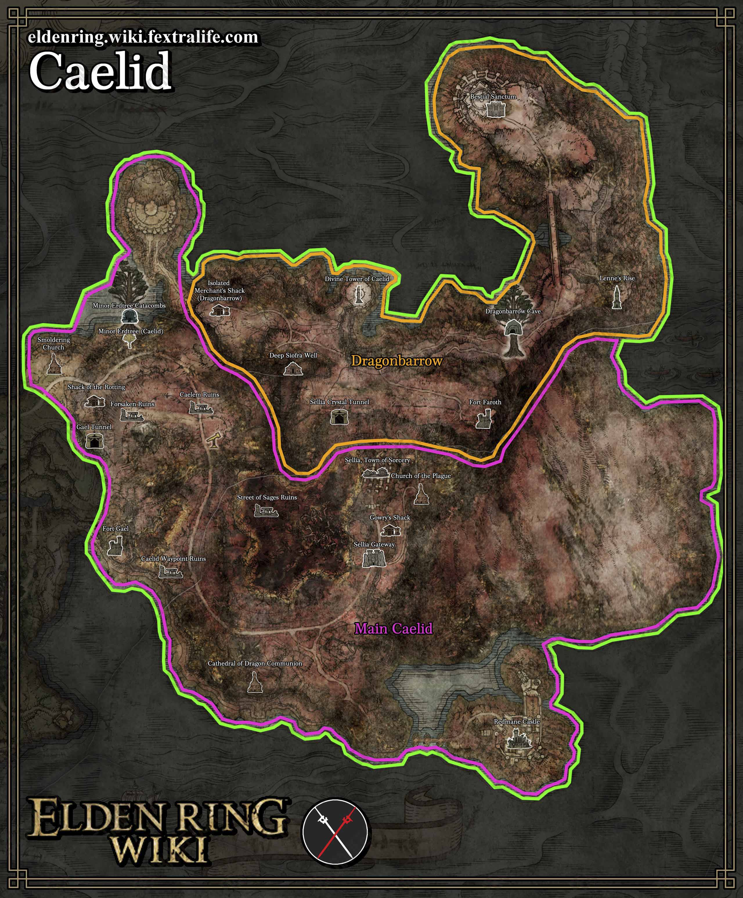
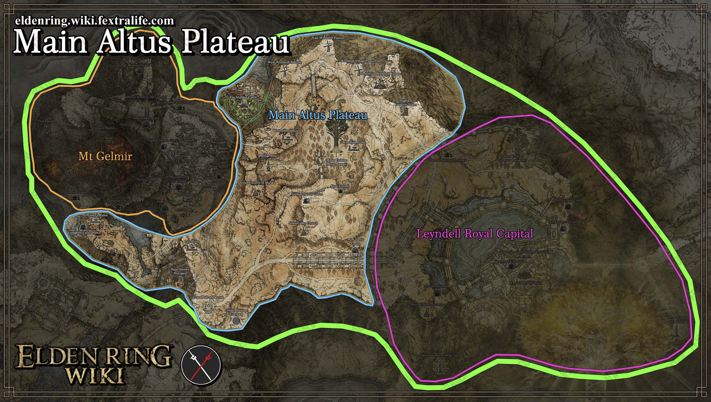
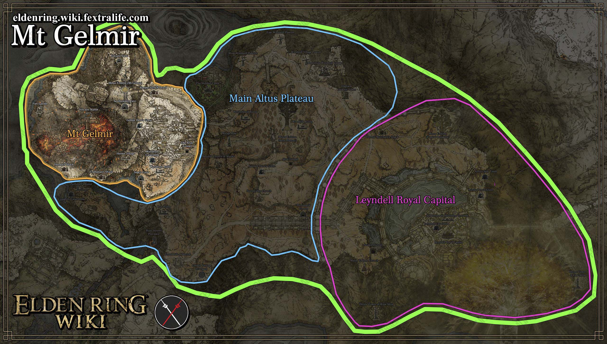
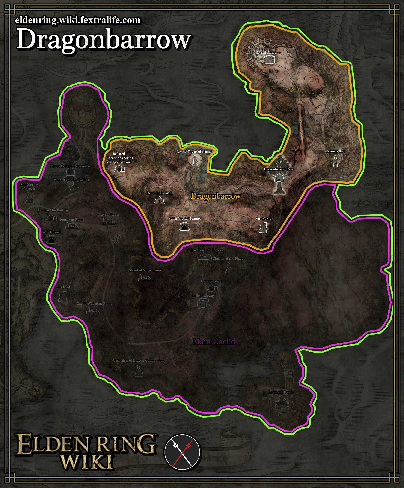
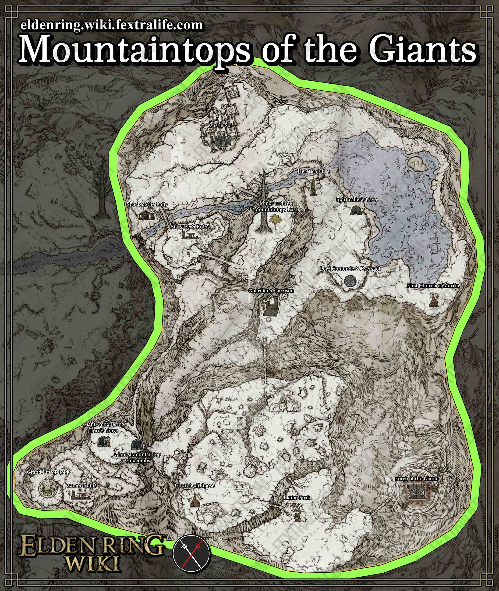
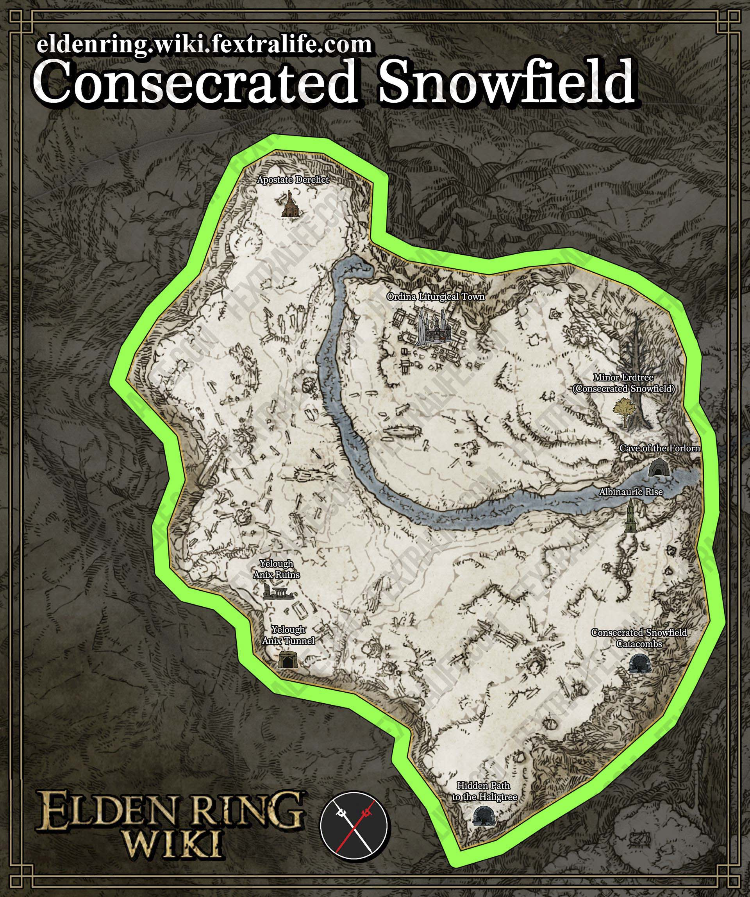

Las Tierras Intermedias es el sitio donde se desarrolla el juego y es
entendido como un gran continente con diferentes islas y zonas. Estas zonas,
además de estar pobladas por criaturas de diversos tipos, tienen semidioses que las gobiernan.
Estas son las zonas principales:
Necrolimbo:
Esta es una zona que se ubica hacia abajo del mapa. "Es una zona exuberante y expansiva del Tenebrae Demesne.
Arboles dorados, hierba alta, y arbustos proveen suficiente sustento a la fauna local, que incluye jabalíes, ovejas, cabras y roedores
además de criaturas voladoras como águilas y búhos. Fauna más siniestra y agresiva también existe, y los que se aventuren deben estar preparados
para combatirlos."

Península del Llanto:
Esta es una zona que se ubica hacia abajo del mapa. "Es una larga península que se desprende de la masa de tierra principal de Necrolimbo en el sur,
conectada solo por el Puente de Sacrificio. Es una tierra hosca, acosada por una atmosfera de culpa y perdida. El asediado Castillo Morne yace en ruinas al sur."

Liurnia de los Lagos:
Esta es una zona que se ubica hacia la mitad del mapa, arriba de Necrolimbo "Con sus aguas poco profundas y vastos humedales, la región de Liurnia es acosada
por el hundimiento gradual de la mayoría de su masa. Con sus bosques perpetuamente cubiertos de niebla, se pueden escuchar sonidos espeluznantes de
campanas en la distancia."

Caelid:
Esta es una zona que se ubica hacia abajo del mapa, a la derecha de Necrolimbo "Un yermo árido que se ve afectado por
la podredumbre escarlata, mutando su flora y fauna, bañando el ambiente en un tono mortal. Muerte y decadencia son vistas muy frecuentes aquí."

Meseta Altus:
Esta es una zona que se ubica hacia arriba del mapa, arriba y a la derecha de Liurnia de los Lagos "Donde se puede encontrar la base del Árbol Áureo y sirve como
entrada a la capital real, Leyndell. Cicatrices de la fragmentación y la guerra permanecen aparentes hasta este día"

Monte Gelmir:
Esta es una zona que se ubica hacia arriba del mapa, arriba de Liurnia de los Lagos "Es una región volcánica al oeste de la Meseta Altus. Esta tierra ha
visto muchas batallas y la lucha continua"

Túmulo de Dragones:
Esta es una zona que se ubica hacia la mitad del mapa, arriba de Caelid "Es una gran extensión de mesetas aislada de la masa principal de Caelid.
Es un santuario creado por los dragones que escaparon de la podredumbre escarlata que asola las tierras del sur"

Pico de los Gigantes:
Esta es una zona que se ubica hacia arriba del mapa, encima de Meseta Altus "Las tierras de los gigantes no son más. Devastadas por la Fragmentación, su forja yace fría
y sus cuerpos congelados están esparcidos por la región desolada, ahora solo habitable por espíritus"

Campo de Nieve Consagrado:
Esta es una zona que se ubica hacia arriba del mapa, al lado izquierdo de Pico de los Gigantes "La tierra prometida de los Albinauricos yace más allá, y aquellos
que enfrentan a sus sombríos asesinos, pueden obtener acceso al Árbol Hierático de Miquella"

Hecho por Andres Leonardo Escobar Pinzon - 2022